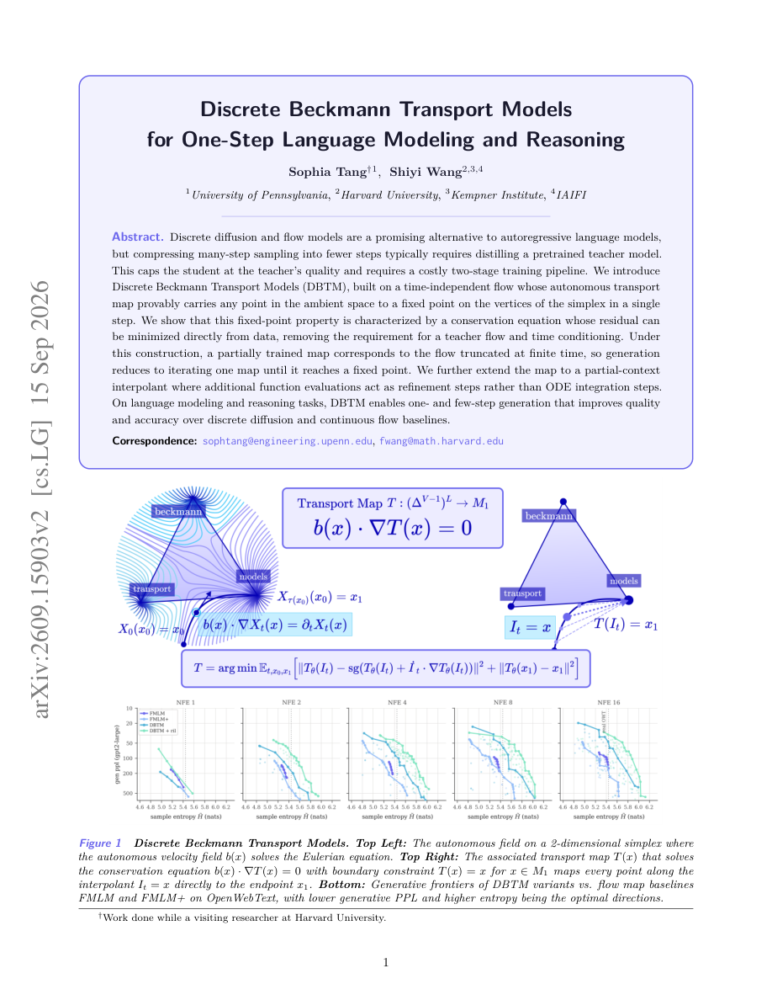

#1
★ 8/10
Discrete Beckmann Transport Models for One-Step Language Modeling and Reasoning
Discrete Beckmann Transport Models for One-Step Language Modeling and Reasoning

图 Figure · Page 1 of paper
🎯 （AI 中文深度分析暂不可用：Anthropic API 额度不足。英文栏为论文原文摘要，下方链接均可正常访问。）
Discrete diffusion and flow models are a promising alternative to autoregressive language models, but compressing many-step sampling into fewer steps typically requires distilling a pretrained teacher model
| 维度 | 中文 | English |
|---|---|---|
| ❓ 待解决 的问题 |
（AI 中文深度分析暂不可用：Anthropic API 额度不足。英文栏为论文原文摘要，下方链接均可正常访问。） | Discrete diffusion and flow models are a promising alternative to autoregressive language models, but compressing many-step sampling into fewer steps typically requires distilling a pretrained teacher model. This caps the student at the teacher's quality and requires a costly two-stage training pipeline. We introduce Discrete Beckmann Transport Models (DBTM), built on a time-independent flow whose autonomous transport map provably carries any point in the ambient space to a fixed point on the vertices of the simplex in a single step. We show that this fixed-point property is characterized by a conservation equation whose residual can be minimized directly from data, removing the requirement for a teacher flow and time conditioning. Under this construction, a partially trained map corresponds to the flow truncated at finite time, so generation reduces to iterating one map until it reaches a fixed point. We further extend the map to a partial-context interpolant where additional function evaluations act as refinement steps rather than ODE integration steps. On language modeling and reasoning tasks, DBTM enables one- and few-step generation that improves quality and accuracy over discrete diffusion and continuous flow baselines. |
| 💡 解决 的亮点 |
（AI 中文深度分析暂不可用：Anthropic API 额度不足。英文栏为论文原文摘要，下方链接均可正常访问。） | See the paper’s original abstract in the "Problem / 背景" row above. |
| 🧪 实验 内容 |
（AI 中文深度分析暂不可用：Anthropic API 额度不足。英文栏为论文原文摘要，下方链接均可正常访问。） | See the paper’s original abstract in the "Problem / 背景" row above. |
| 📊 实验 结果 |
（AI 中文深度分析暂不可用：Anthropic API 额度不足。英文栏为论文原文摘要，下方链接均可正常访问。） | See the paper’s original abstract in the "Problem / 背景" row above. |
| 🏁 结论 | （AI 中文深度分析暂不可用：Anthropic API 额度不足。英文栏为论文原文摘要，下方链接均可正常访问。） | See the paper’s original abstract in the "Problem / 背景" row above. |
| 🔗 论文 链接 |
arXiv: 2609.15903v2 · 📥 PDF | |
⚙️ Method · 方法详解
（AI 中文深度分析暂不可用：Anthropic API 额度不足。英文栏为论文原文摘要，下方链接均可正常访问。）
See the paper’s original abstract in the "Problem / 背景" row above.
🌟 Why It Matters · 为什么重要
（AI 中文深度分析暂不可用：Anthropic API 额度不足。英文栏为论文原文摘要，下方链接均可正常访问。）
See the paper’s original abstract in the "Problem / 背景" row above.